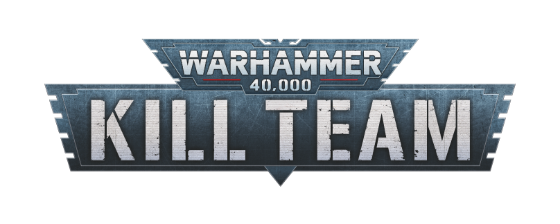

戰錘 40,000 & 殺戮小隊 繁體中文全戰棋情報庫
歡迎來到《戰錘 40,000》（Warhammer 40,000）與《殺戮小隊》（Kill Team）繁體中文情報庫。本站依據 Games Workshop 最新官方 第 11 版官方巡邏特遣隊 (Combat Patrol 11th Edition) 與殺戮小隊第 3 版規則體系，結合華語戰棋社群通用的標準術語全面編修。提供 11 版戰巡核心作戰手冊、兩大熱門戰巡部隊數據卡、40K 戰巡 War Journal 對戰助手、殺戮小隊戰隊手冊與特規辭典。
11TH ED 戰錘 40,000：核心規則與巡邏特遣隊專區 (Core Rules & Combat Patrol)
直接同步自官方《Warhammer 40,000》最新實機資料庫！收錄全部 25 個核心章節、10 個核心計謀、40 項核心技能、最新平衡勘誤與 66 項官方 FAQ。
- 25 個核心章節全收錄：從核心概念、資料表、五大階段到進階載具/運輸/預備隊
- 10 大通用核心計謀：指揮重擲、史詩挑戰、粉碎衝擊、警戒射擊、英勇介入等完整卡片
- 40 項核心與武器技能：深入打擊、不覺疼痛、先攻、[致命一擊]、[爆炸]、[熱熔]速查
- 即時關鍵字檢索：支援中英雙語關鍵字即時輸入檢索與一鍵展開/收合
- 66 條官方問答與最新勘誤：最新平衡更新與官方疑難裁判完整解答
第 11 版官方標準入門與緊湊對戰規格！免算軍表分數，專為 44" × 30" 桌面設計，收錄完整 10 大作戰流程與計策速查。
- 完整五大階段：指揮/戰場震懾、移動、射擊判定、衝鋒、近戰
- 受傷判定矩陣：武器力量 (S) vs 目標堅韌 (T) 對比速查
- 6 大通用計策：指揮重擲、反攻、英勇介入、煙幕掩護等 (禁用粉碎/炸藥/深打)
- 官方 10 步流程：佈局 A/B/C 三大地圖、攻防判定、5 輪任務計分
依據官方 App「War Journal」規格打造！整合 5 輪次計分、專屬主要任務自動載入、CP 計謀扣除與單位傷亡面板。
- 主要任務自動載入：阿斯塔特【為了戰團的榮耀】＆ 歐克【痛揍他們！】
- 戰場佈局切換：一鍵呼出佈局 A、B、C 官方戰術地圖與先攻拼骰
- CP 與計謀調用：支援專屬戰略與核心計謀即時調用，自動核減 CP
- 單位血量與傷亡：實時監控連長、頭目、卡車與步兵小隊存活狀態

Mac 官方 App 實機同步最新編制！聖物盾連長率領智庫員、先鋒老兵跳躍背包、仲裁者與高速蘭德速攻艇實施精準雷霆斬首。
- 連長與智庫員：聖物盾自帶 4+ 特殊豁免 (特保 InSv)，智庫員提供全隊 4+ 靈能護盾
- 高速打帶跑先鋒：5 人跳躍先鋒老兵小隊 (快速反應撤退 6")
- 堅定防禦與重火力：仲裁者小隊 (OC 3)、蘭德速攻艇 (M14" 多管熱熔/重焚化)
- 官方專屬任務與計謀：主要任務【為了戰團的榮耀】、戰略【無息攻勢/斬首打擊】
Mac 官方 App 實機同步最新編制！由戰爭頭目率領靈能小子、戰鬥卡車、小子、蠻人小子與無限死遁的屁精大隊席捲戰場。
- 戰爭頭目＆靈能小子：大斬刀 (劈裂1 傷害3)，靈能小子【摩克圖騰】永久控制目標
- 重裝戰鬥卡車：移動 12"、生命 7，死後無差別引爆；可強化為 3+ 護甲與 4+ 特保 (InSv)
- 不死地精災害：屁精小隊被滅時重置為備軍，以【深度打擊】重新空降戰場！
- 官方專屬任務與計謀：主要任務【痛揍他們！】、戰略【碾碎他們/醫療跳跳】
📜 官方 App 全 24 支 Combat Patrol 戰巡名冊目錄 APP DATABASE
我們已透過本地 SQLite 介面完全打通您 Mac 上官方 App 的資料庫，目前已優先上線最熱門的「突擊分隊」與「硬漢幫」，其餘 22 支戰巡隊隨時皆可秒速提取生成繁中手冊！
殺戮小隊戰隊手冊 (Kill Team Factions)


歐克獸人中最狡黠的割喉突擊隊！將潛行暗殺與毀滅性大爆炸結合，善於在陰影中掩護逼近，接著以勢不可擋的猛烈肉搏痛擊敵人。
- 老大戰術簡報：開場額外指令指派與免費爆彈投擲
- 割喉伏擊優勢：隱蔽指令下發動突襲並轉化爆擊成功
- 豐富爆笑兵種：特戰頭目老大、炸彈史奎格、特戰屁精等11種特工
核心機制、對戰工具與通用手冊
桌面對戰必備！手機、平板或筆電一開即用，全方位輔助雙方玩家實體對戰：
- 五步建立精靈：選定小隊、8大戰團戰術/老大戰術、挑選特工武裝、配置4項裝備
- 動態特工血量條：點擊即時扣血加血、低於50%自動亮起「受傷」警告、0血陣亡標記
- 資源與流程看板：標準4回合推進、每回合CP與VP輸入計算、輪流啟動/指令切換
- 裝備消耗追蹤：手榴彈次數遞減、每回合裝備自動重置、localStorage 自動存檔
Games Workshop 2026 最新官方修訂版通用裝備全收錄：
- 11 項通用物資：通訊裝置、地雷、彈藥補給箱、鐵絲網、輕重型路障、便攜路障、戰術梯
- 投擲物與破拆：煙幕手榴彈 (降穿刺)、震撼手榴彈 (APL-1)、破片/穿甲手雷、破拆炸藥
- 獨特行動消耗：彈藥補給 (0AP)、攜帶路障移動、戰術梯垂直 1" 攀爬特規
- 最新官方問答：收錄 June '26 規則問答 (Rules Commentary) 與勘誤說明
濃縮核心手冊全部對戰基底！最適合新手教學與快速查詢：
- 轉折點架構：戰略階段（擲先攻權、CP獲取、戰略策略）與交戰階段（輪流啟動特工）
- 特工指令：交戰指令（正常行動與反制）與隱蔽指令（掩護下不可被選為有效目標）
- 六大動作：換位 (1AP)、衝刺 (1AP)、衝鋒 (1AP)、射擊 (1AP)、近戰搏鬥 (1AP)、撤退 (2AP)
- 對戰結算：掩護免擲保底防禦骰、傷害格擋分配與近戰打擊/招架攻防對決
戰錘 40K & 殺戮小隊 通用武器特規速查辭典 (Weapon & Ability Glossary)
殺戮小隊 繁英官方專有名詞對照表 (Bilingual Terminology)
| 英文原名 (English) | 繁體中文標準 (Traditional Chinese) | 說明與遊戲內涵意 |
|---|---|---|
| Operative | 特工 | 殺戮小隊戰場上的單個微縮模型作戰單位。 |
| Activation | 啟動 | 輪流指派一名特工執行指令選定與行動花費的完整流程。 |
| Initiative | 先攻權 | 戰略階段各擲 D6 決定，勝者優先選擇或執行戰略計謀與特工啟動順位。 |
| Turning Point | 轉折點 | 對戰局數計算單位（標準一場戰鬥共計 4 個轉折點）。 |
| Firefight Phase | 交戰階段 | 特工輪流啟動並執行移動、射擊與肉搏搏鬥的核心戰鬥階段。 |
| Strategy Phase | 戰略階段 | 轉折點開端，雙方獲取CP、就緒特工與輪流打出戰略策略的階段。 |
| Reposition | 換位 (1 AP) | 以特工 Move 數值進行移動，過程中任何部位均不可進入敵方 1" 控制範圍。 |
| Dash | 衝刺 (1 AP) | 固定移動 3 吋，不能攀爬，用於延伸移動距離。 |
| Charge | 衝鋒 (1 AP) | 以 Move + 2 吋移動，必須於敵方控制範圍內結束移動並展開近身。 |
| Shoot | 射擊 (1 AP) | 宣告一把遠程武器，對有效目標展開遠程交火與防禦判定。 |
| Fight | 近戰搏鬥 (1 AP) | 宣告一把近戰武器，雙方同時擲骰，輪流選擇打擊或招架。 |
| Fall Back | 撤退 (2 AP) | 在被敵軍近身貼合時脫離戰鬥，結束時不得留在敵方控制範圍內。 |
| Pass | 跳過 | 戰略階段中選擇不打出策略，或輪到行動時略過。 |
| Control Range | 控制範圍 | 特工底盤周圍 1 吋且可見的近身威脅警戒區域。 |
| Cover | 掩護 | 防守方在地形 1 吋範圍內阻礙敵方視線，可免擲並保留 1 顆普通成功防禦骰。 |
| Counteract | 反制行動 | 特工全部待機後，對手啟動時可選一名交戰特工免費執行 1AP 行動（限移2"）。 |
| Critical Hit / Success | 爆擊成功 | 通常為擲出 6 點或符合 Lethal 條件之成功骰，可造成高額爆擊傷害。 |